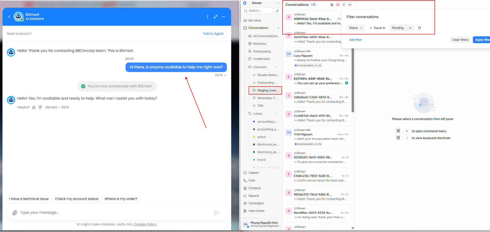
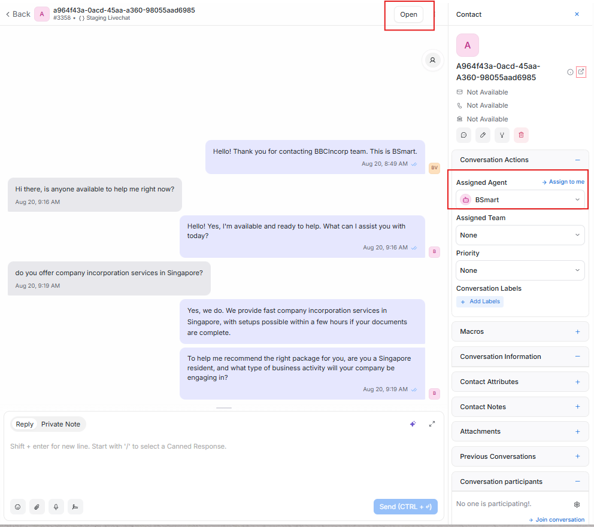
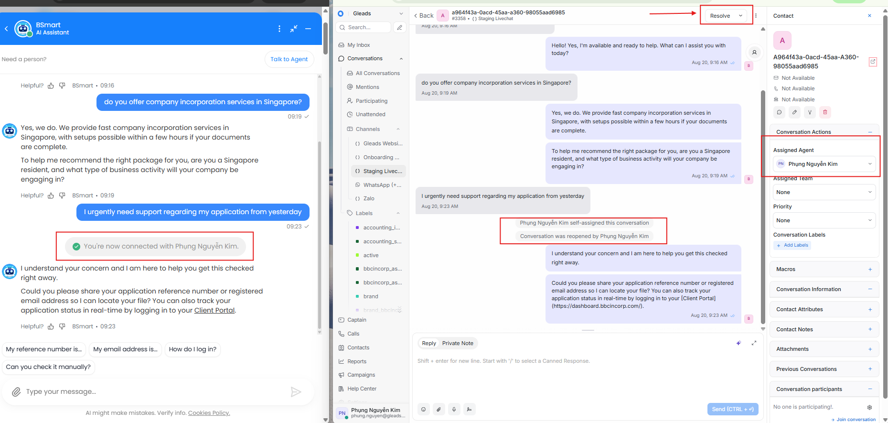
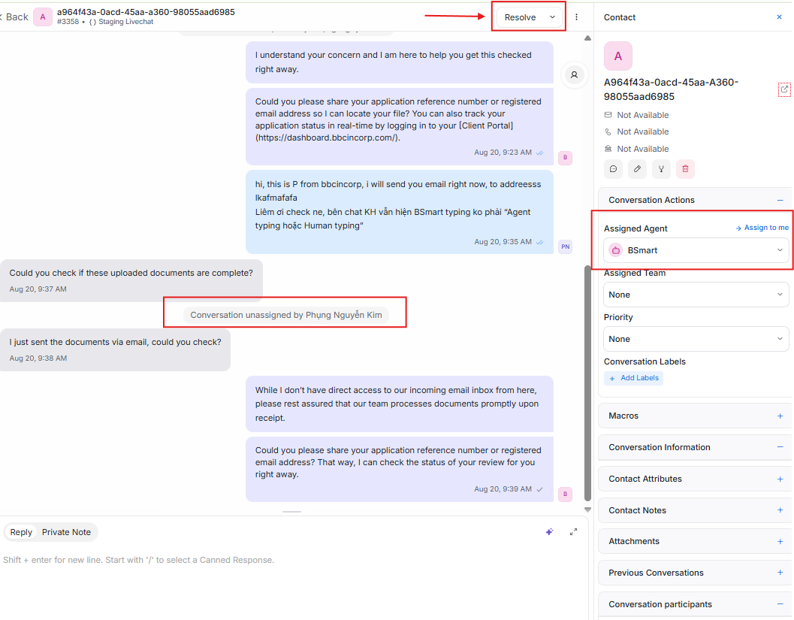
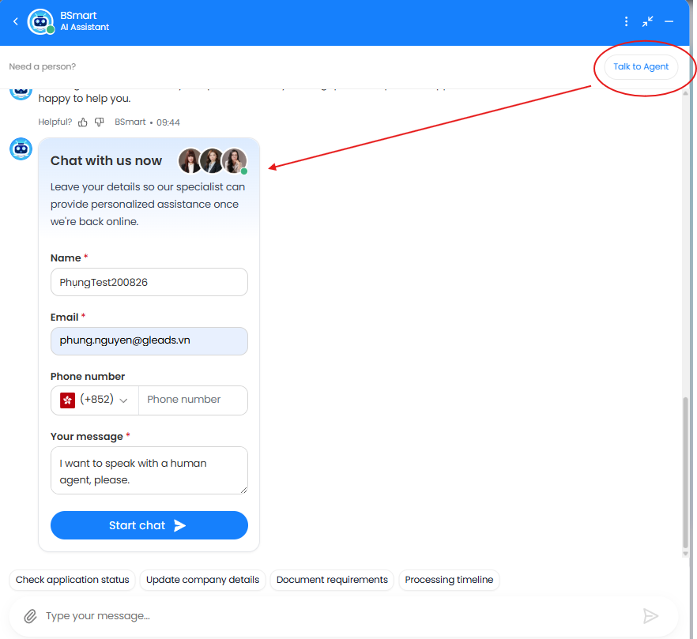
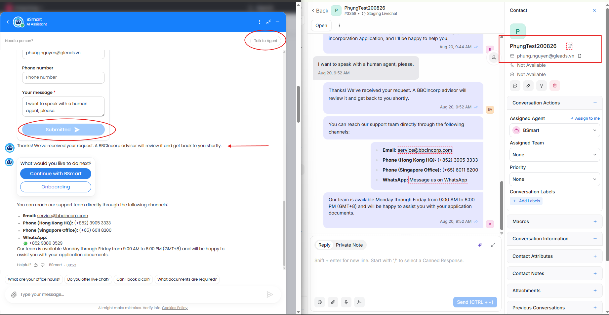
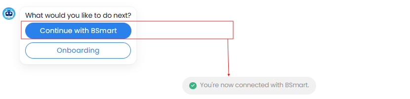
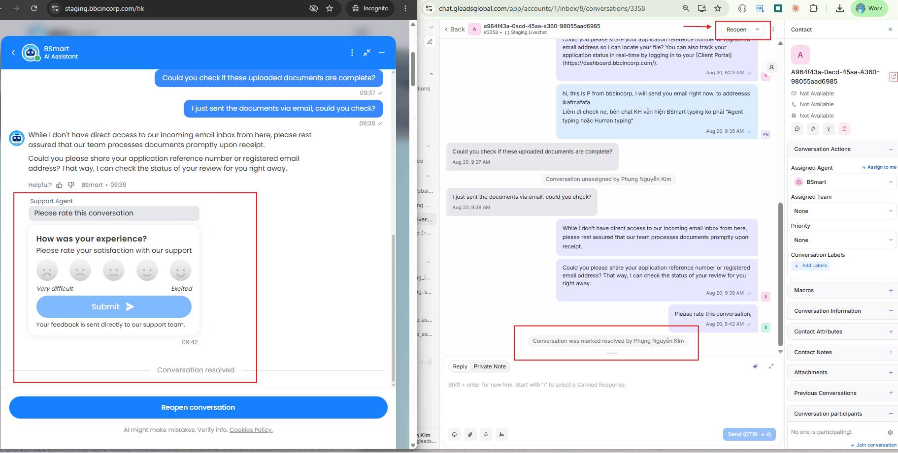
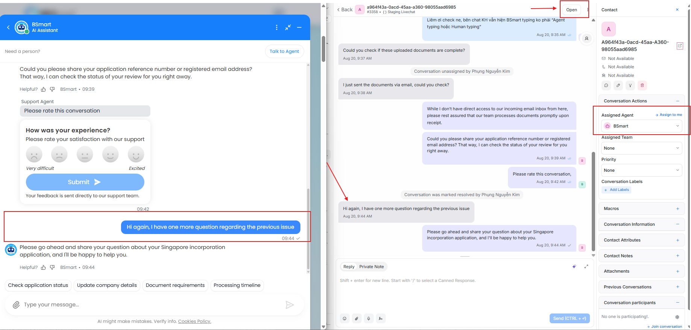

Chatbot & CS Team Handoff on Chatwoot
How the CS team passes a WhatsApp/Livechat conversation to BSmart and back.
Core Principles
Only two fields control the handoff. Everything else follows from them.
Assignee = WHO
Decides whether a human or the bot handles the conversation.
Status = Pending
For new inbound conversations.
Status = Open
For a live case that needs cover.
Quick Reference
Four combinations cover every conversation.
Handoff on WhatsApp
Four steps: bot greets, CS takes over, bot covers, ticket closes.
Step 1: First Contact
The bot acts as receptionist
When a customer sends the first message on WhatsApp, Chatwoot sets:

Step 2: CS Takes Over
Turn the bot off to advise
When the case needs an agent, set both fields:

Step 3: Hand Back to the Bot
The bot covers the live case
Mid-conversation, change one field only:

Step 4: Close the Case
Close the ticket in Chatwoot
Once the customer's request is settled:

After Resolved: The Loop Restarts
A new conversation opens at Step 1
If the customer messages again after the case was resolved, Chatwoot creates a new conversation:

Handoff on BSmart Livechat
Website widget. Same two fields, plus the customer-initiated "Talk to Agent" form.
Livechat Flow at a Glance
New visitor arrives
Step 1 — Anonymous visitor, conversation waiting as Pending

Step 1 — Anonymous User – Assigned to the Agent Bot (BSmart)

CS takes over
Step 2 — Assigned to CS, status Open, bot off

Bot covers the shift
Step 3 — Handed back to the Agent Bot, status kept Open

Customer asks for a human
Step 4 — Talk to Agent form submitted

Step 4 — After submit: anonymous becomes identified

Customer stays with the bot

Close & re-open
Step 5 — Status set to Resolved, bot skips the case

Step 5 — Re-opened as Pending with context history

Recap for the CS Desk
Assign before you reply
Put your name on the conversation and set it to Open, or the bot keeps answering alongside you.
Hand back, don't park
Leaving your shift with a case Open and assigned to you leaves the customer waiting. Reassign to Agent Bot.
Resolve when finished
Resolved keeps the queue clean, and the next inbound message reopens the flow at Pending automatically.